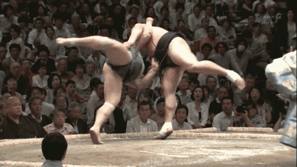

Sumo Wrestlers

"Sumo is a form of competitive full-contact wrestling where a rikishi (wrestler) attempts to force his opponent out of a circular ring (dohyō) or into touching the ground with any body part other than the soles of his feet (usually by throwing, shoving or pushing him down)." wiki page